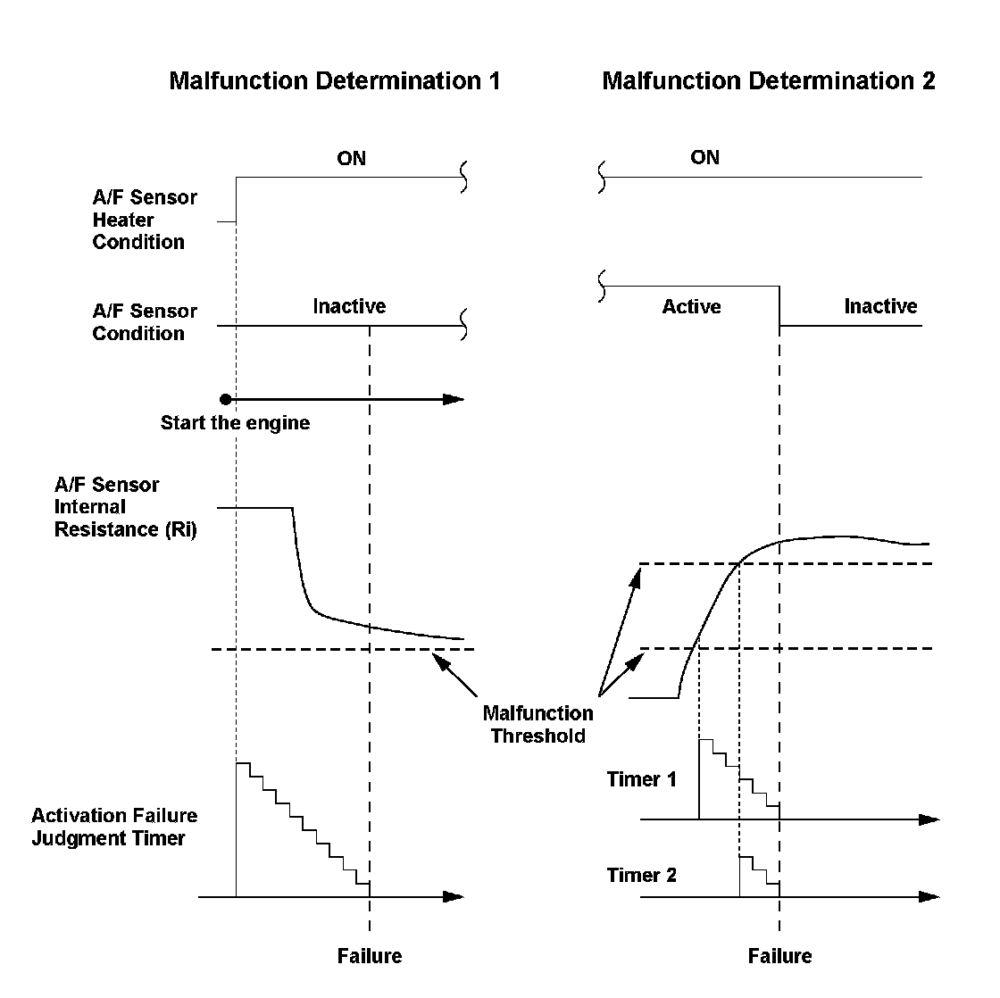
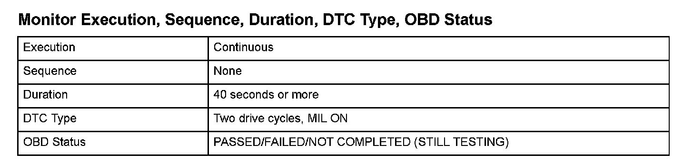
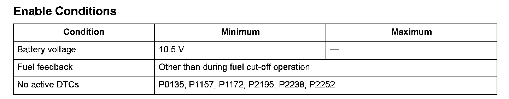

Advanced Diagnostics
DTC P0134: Air/Fuel Ratio (A/F) Sensor (Sensor 1) Heater System Malfunction
General Description
The air/fuel ratio (A/F) sensor is activated by warming the element with a heater to maintain it at a steady high temperature for accurate air/fuel (A/F) ratio calculation. The A/F sensor does not become active when the element is not properly heated due to a heater malfunction, and the exhaust emissions deteriorate. The engine control module (ECM)/powertrain control module (PCM) monitors the A/F sensor condition by monitoring the A/F sensor internal resistance.
1. When the A/F sensor does not activate in a set time after the A/F sensor heater is turned on (with high A/F sensor internal resistance), a malfunction of the A/F sensor heater is detected, and a DTC is stored.
2. The A/F sensor heater cycles ON and OFF within a set time. The heater s state is detected by monitoring the internal resistance of the A/F sensor. If the resistance remains high when the heater is ON, a malfunction in the A/F sensor heater is detected, and a DTC is stored.
Because the degree of effect on engine control differs according to the A/F sensor internal resistance, there are two malfunction detection threshold levels. When either one is reached, a malfunction is detected.

Monitor Execution, Sequence, Duration, DTC Type, OBD Status

Enable Conditions
Malfunction Threshold
Malfunction determination 1
The A/F sensor internal resistance value is 70 ohms or more for at least 40 seconds right after the engine starts.
Malfunction determination 2
- The A/F sensor internal resistance value is 70 ohms or more for at least 15 seconds.
- The A/F sensor internal resistance value is 90 ohms or more for at least 1 second.
Driving Pattern
Start the engine, then let it idle for at least 2 minutes.
Diagnosis Details
Conditions for illuminating the MIL
When a malfunction is detected during the first drive cycle, a Temporary DTC is stored in the ECM/PCM memory. If the malfunction recurs during the next (second) drive cycle, the MIL comes on and the DTC and the freeze frame data are stored.
Conditions for clearing the MIL
The MIL will be cleared if the malfunction does not recur during three consecutive trips in which the diagnostic runs.
The MIL, the DTC, the Temporary DTC, and the freeze frame data can be cleared by using the scan tool Clear command or by disconnecting the battery.